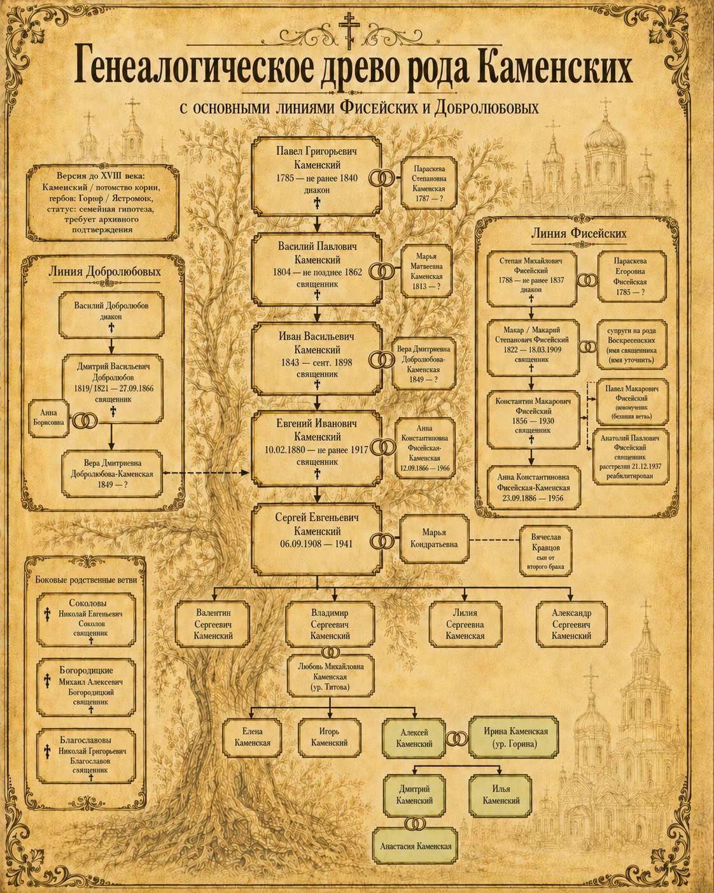

Для кого эта книга
Я пишу эту книгу для наших детей. Для тех, кто однажды спросит: кто мы, откуда пришла наша семья и почему о прошлом у нас так долго говорили вполголоса.
Меня зовут Алексей Каменский. Я младший сын Владимира Сергеевича Каменского и Любови Михайловны Каменской, урождённой Титовой. У меня есть старшая сестра Елена, в семье — Лена, и брат Игорь.
Мы выросли уже в советском мире. Отец работал заместителем директора по производству на АЗТМ, состоял в партии, был человеком завода, ответственности и своего времени. О священниках, арестах, лишенцах, дореволюционных корнях и лагерях в семье почти не говорили. Не потому, что ничего не помнили. Потому что боялись.
Долгое время мне казалось, что о наших предках сохранилось совсем мало. Потом оказалось: сохранилось больше, чем я думал. Фотографии. Церковные ведомости. Карточки духовенства. Старые записи. Семейные рассказы. Не всё, но достаточно, чтобы за именами начали появляться люди.
Этот поиск начался для меня спустя сорок шесть лет после детской поездки с отцом к родственникам — в Саратов, Поволжье, Подмосковье, Электросталь. Начался с фотографии, которая стояла дома на полке.
На ней был мой прадед, Евгений Иванович Каменский, священник села Шклово. Сначала это было просто старое лицо из семейного прошлого. Потом — имя. Потом — документ. А за ним постепенно открылись Каменские, Фисейские, Добролюбовы, училища, храмы, семейные союзы, аресты, война и долгое молчание.
В архиве сохранились и другие старые фотографии конца XIX — начала XX века. На одной из них стоит подпись польского фотографа. Кто изображён на этих снимках, я пока не знаю. Поэтому не вписываю их в родословную как доказанный факт. Но оставляю как след: возможно, когда-нибудь именно он поможет открыть более раннюю часть семейной истории.
Мне не хотелось придумывать красивую легенду. Хотелось понять, как всё было на самом деле, и оставить детям не пустоту, а имена, лица и правду — насколько её удалось восстановить.
Алексей Каменский
